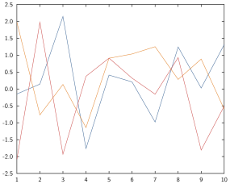
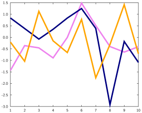

Line and scatter plot
Basic syntax
The relevant commands here are plot, plot!, scatter and scatter!. The key command is a plot which is just a 2D line connecting a set of points; where plot by default shows a line and no marker, scatter by default shows markers and no line.
The general syntax is:
command(data_to_plot...; options...)a command with an exclamation mark will add the corresponding plot to the current active axes while a command without will erase any existing plot on the current active axes and then display the plot.
For instance:
x = range(-2.5, stop=2.5, length=100)
y = @. exp(-x^2) * sin(x)
plot(x, y)
mask = 1:5:100
scatter!(x[mask], y[mask])overlays a scatterplot to a line plot:

Data formats
These commands take vectors or matrices of points, as long as the number of rows match you should be fine.
- Single vector $x$: the plot will correspond to the pairs $(i, x_i)$.
For instance:
plot(randn(5))
Two vectors $x$, $y$: the plot will correspond to the pairs $(x_i, y_i)$ (see e.g. the example earlier)
Multiple vectors $x$, $y$, $z$: this will create multiple plots corresponding to the pairs $(x_i, y_i)$, $(x_i, z_i)$ etc.
For instance:
x = range(0, 1, length=100)
plot(x, x.^2, x.^3, x.^4)
- Single matrix $X$: the plots will correspond to the pairs $(i, X_{i1})$, $(i, X_{i2})$ etc.
For instance:
plot(randn(10, 3))
- vector and matrices or vector $x$, $Y$, $Z$: will form plots corresponding to the pairs of $x$ and each column in $Y$, $Z$ etc.
For instance:
x = range(0, 1, length=25)
y = @. sin(x)
z = @. cos(x)
t = y .+ z
scatter(x, hcat(y, z), t)
Styling options
Line and scatter plots have effectively two things they can get styled:
- the line styles
- the marker styles
Note the plural, so that if you are plotting multiple lines at once, each keyword accepts a vector of elements to style the individual plots. If a styling option is specified with a scalar but multiple lines are being plotted, all will have that same option.
For instance:
plot(randn(10, 3), colors=["violet", "navyblue", "orange"], lwidth=0.1)
Line style options
For each of these options, it should be understood that you can either pass a single value or a vector of values.
- line style [
ls,lstyle,linestyle,lstylesandlinestyles]: take a string describing how the line(s) will look like.
| Value | Result | Comment |
|---|---|---|
"-" |  | default for plot |
"--" |  | |
"-." |  | |
"none" | default for scatter |
- line width [
lw,lwidth,linewidth,lwidthsandlinewidths]: take a positive number describing how thick the line should be in centimeters.
| Value | Result | Comment |
|---|---|---|
0.001 |  | |
0.01 |  | |
0.05 | ||
0.1 |  | |
0 |  | default value, corresponds to 0.02 |
- line color [
col,color,colsandcolors]: take a string (most SVG color name) or aColorobject (from theColors.jlpackage) describing how the line should be coloured.
| Value | Result |
|---|---|
"cornflowerblue" |  |
"forestgreen" | |
"indigo" |  |
"RGB(0.5,0.7,0.2)" |  |
Note that if the colour is not specified, a default colour will be taken by cycling through a colour palette.
- smoothness: [
smoothandsmooths]: take a boolean indicating whether the line interpolating between the points should be made out of straight lines (default,smooth=false) or out of interpolating splines (smooth=true). The latter may look nicer for plots that represent a continuous function when there aren't many points.
x = range(-2, 2, length=20)
y1 = @. sin(exp(-x)) + 0.5
y2 = @. sin(exp(-x)) - 0.5
plot(x, y1; label="unsmoothed")
plot!(x, y2; smooth=true, label="smoothed")
legend()
Here's another example combining several options:
x = range(0, 2, length=100)
for α ∈ 0.01:0.05:0.8
plot!(x, x.^α, lwidth=α/10, col=RGB(0.0,0.0,α), smooth=true)
end
Marker style options
Notes
Infinities, NaNs and Missing values are all treated the same way: they're not shown.
TBD
- plot is tied to data, if data changes, the plot will change too, so should be careful. Note that this is ONLY if the data is modified in place. So for instance
x = randn(5)
y = randn(5)
plot(x, y)
x = zeros(5)
xlabel("blah") # the graph will not have changedhowever
x = randn(5)
y = randn(5)
plot(x, y)
x[1] = 0.0
xlabel("blah") # here the first point will be (0.0, y[1])- Inf, NaN and Missings are all considered in the same way (as missings).